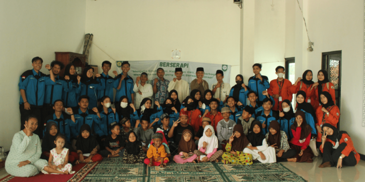

Peringati Hari Nelayan Nasional Himapi Untirta Gelar BERSERAPI
Himpunan Mahasiswa Ilmu Perikanan (Himapi) Universitas Sultan Ageng Tirtayasa (Untirta) sukses menggelar Berkah Sehat Ramadan Bersama Himapi (BERSERAPI) dengan mengusung tema “Menjalin Silaturahmi, Kokohkan Hati, dan Berbagi Menuju Ramadhan yang Sehat Bersama HIMAPI”. Acara ini bertujuan menyejahterakan masyarakat desa Tanggul Indah yang mayoritas nelayan sekaligus memperingati Hari Nelayan Nasional yang jatuh pada Kamis lalu. (12/4)
Pelaksanaan acara ini berlangsung sukses yang berlangsung pada tanggal 8-9 April di Masjid Jami Al-Falah dan Lapangan Desa Tanggul Indah, Serang, Banten. Hari Pertama dilakukan pembukaan acara serta lomba kerohanian anak-anak, dilanjutkan dengan edukasi manfaat konsumsi ikan, ceramah, lalu tadarus bersama seraya menungggu buka puasa bersama Ustad Ujang. Kemudian pada hari kedua diadakan santunan anak yatim, Pemeriksaan kesehatan, Himapi berbagi, dan acara penutupan.
Ketua pelaksana BERSERAPI, Fajar Ramadhan, mengungkapkan sasaran untuk acara ini adalah warga pesisir pantai (nelayan), anak-anak kecil, anak yatim piatu, dan masyarakat sekitar yang kurang mampu. Acara tersebut dihadiri oleh senior Himapi, dosen ilmu perikanan, dan wakil dekan 3 fakultas pertanian.
“Saya berharap setelah diadakannya kegiatan ini dapat menumbuhkan masyarakat untuk gemar dalam konsumsi ikan, karena ikan baik bagi kesehatan tubuh dan perkembangan otak anak. Terlebih warga di pesisir bisa lebih menjaga diri agar terhindar dari berbagai macam penyakit, dan mengembangkan minat baca serta kreativitas bagi anak-anak di wilayah pesisir pantai desa tanggul indah,” ungkapnya
Ketua Umum Himapi, Rubi Maulana mengungkapkan sangat senang karena BERSERAPI merupakan acara pertama Himapi dalam periode tahun ini.
“(Saya) senang karena (ini) merupakan acara pertama Himapi dalam periode tahun ini. Alhamdulillah, acara ini mendapatkan banyak antusias dari masyarakat Desa Tanggul Indah,” ujarnya.
Ia berharap dengan adanya acara kemarin masyarakat Desa Tanggul indah mendapatkan ilmu yang bermanfaat terkait spesifikasi nilai gizi dari beberapa komoditas perikanan dan dapat menjaga kesehatan dirinya, serta dapat menjaga silaturahminya antar masyarakat.
Koordinasi Acar, Faradila, berharap generasi penerus bangsa dapat gemar makan ikan karena ikan mengandung banyak protein yang sangat bermanfaat bagi pertumbuhan anak.
“Setelah diadakannya kegiatan ini, generasi penerus bangsa ini gemar konsumsi ikan karena ikan mengandung banyak protein yang sangat bermanfaat bagi pertumbuhan anak. Kami juga berharap, anak-anak di Desa Tanggul Indah tersebut bisa lebih kreatif dan semakin gemar membaca buku-buku agar mereka mendapatkan banyak pengetahuan,” harapnya.
← Kembali ke Beranda